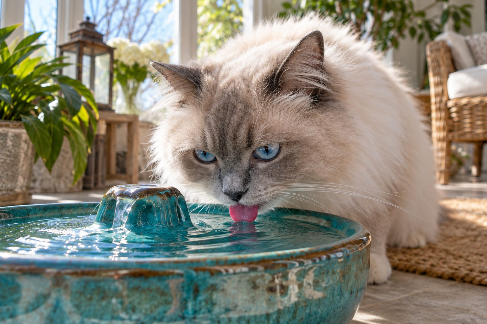

If your cat is suddenly drinking much more than usual, especially with larger urine clumps or weight change, contact your veterinarian.
Some cats drink more after switching to dry food or during warm weather. A sustained change, however, can be associated with medical conditions that need assessment. Instead of estimating from memory, measure what your cat drinks and watch the litter box.
Confirm the change
Fill a measured bowl and record how much remains after 24 hours, allowing for spills and other pets. If several cats share water, separate bowls can help. Note changes in food, room temperature, and activity.
Look for larger or more frequent urine clumps. Keep a simple record for several days, but do not wait to call if your cat seems unwell.
Confirm the change as accurately as you can. Has the bowl needed refilling more often, or did you simply begin noticing normal visits to a fountain? Has the cat switched from wet food to dry, moved to a warmer room, or become more active? These details matter, but they should not be used to dismiss a sustained change. In a multicat home, a shared bowl hides who drinks what. Consider separate bowls and observe individual visits without restricting access. Note the dates, food type, and approximate amounts added.
The litter box can provide another clue. Larger clumps, more frequent urination, or accidents may accompany increased drinking. A box that is scooped daily makes the pattern easier to see. Do not attempt to diagnose from water intake alone or wait until you can calculate an exact number. A clear change from this cat's usual behavior is enough reason to ask a veterinarian.
Why the pattern matters
Wet food contains more moisture than dry food, so a diet change can alter how often a cat visits the bowl. Heat may also increase drinking. Other possible causes include kidney disease, diabetes, and hormonal conditions. These cannot be distinguished reliably at home.
A veterinarian can review your notes, examine your cat, and recommend appropriate tests. Do not restrict water to see whether the pattern stops; cats need free access to fresh water.
Increased thirst can arise for several reasons, and a veterinarian may use the history, examination, urine tests, and blood work to look for the cause. Kidney disease, diabetes, thyroid disease, medications, and other conditions can be considered, depending on the cat. These possibilities are reasons to seek assessment, not labels to apply at home. Tell the clinician about weight change, appetite, vomiting, activity, and any treatment already being given. The pattern over days or weeks can be more informative than one unusually warm afternoon.
Never limit water to see whether urination improves. A thirsty cat needs access while the cause is assessed. If the cat appears weak, vomits repeatedly, cannot urinate, or is straining without producing urine, seek urgent veterinary help. The goal is to respond to the complete clinical picture.

Other signs to watch
Weight loss, appetite changes, vomiting, reduced energy, or a different coat can add useful context. Straining to urinate, repeated trips to the box with little output, or distress requires prompt veterinary care, especially in male cats.
Bring information about food, treats, medications, and the timing of the change. Small details may be more useful than a single guess about a cause.
Make observation simple enough to continue. Use the same bowl for a few ordinary days, note how much you pour in, and measure what remains at roughly the same time each day. Allow for spills and evaporation; the record is an estimate, not a laboratory result. If several cats share the home, note which bowls each favors or ask the veterinary team how to collect a useful individual history. Add the food type and any recent changes because moisture from meals affects how much a cat may drink directly.
Bring the record to the appointment along with medication and supplement names. Do not add flavored water, change diet abruptly, or move every bowl during the measurement period unless necessary for comfort. Multiple simultaneous changes can make the trend hard to interpret. Keep fresh water accessible in several familiar locations.
Make water easy to access
Offer clean bowls in quiet places, away from litter and busy doorways. Some cats prefer wide bowls or a fountain. These changes support hydration but do not replace a veterinary assessment of unexplained thirst.
Other behaviors can tell you when to call sooner. Unplanned weight loss, a ravenous appetite, reduced appetite, poor grooming, tiredness, or vomiting alongside increased thirst should be reported. A cat that repeatedly visits the litter box but produces little or no urine needs emergency attention. This is a different situation from simply drinking more and cannot be managed by waiting for a routine appointment. If you are uncertain which pattern you are seeing, call a clinic and describe the exact litter observations.
Do not assume that an older cat drinks more just because of age. Age may change the likelihood of certain diseases, but a new symptom still deserves assessment. Similarly, a cat may continue to play and seek affection while an underlying condition develops. A timely examination is a practical step, not an overreaction.
Practical details
How to tell whether thirst truly increased
It is easy to notice a cat at the water bowl once and assume a major change. Instead, measure what goes into the bowl for a short period and subtract what remains, allowing for spills and other pets. If several cats share water, provide separate bowls and watch who uses them. Do not restrict access to make the measurement easier; every cat needs fresh water available.
Compare the bowl record with litter-box output. Larger clumps or more frequent urination may be as informative as drinking itself. A new switch from wet food to dry food can change bowl drinking, but it should not automatically explain a striking or persistent shift. Keep the food packaging or name for the veterinary conversation.
A simple observation record
Measure fresh water into a clean bowl and note which cats can reach it.
Record spills, refills, and any new food or warm-weather change.
Notice larger or more frequent urine clumps and any straining.
Share the record plus appetite, weight, energy, and medication changes with your veterinarian.
Why a clinic may recommend tests
Increased thirst and urination can be associated with several conditions, including kidney disorders, diabetes, and hormonal disease. The same signs can appear for different reasons, and they cannot be sorted out reliably by appearance at home. A veterinarian may use the history, examination, blood work, and a urine sample to determine the cause.
Do not start supplements or alter a prescribed diet based on an online list of possibilities. A cat may need a very different plan depending on the actual finding. If weight loss, vomiting, or lethargy accompanies the drinking change, call promptly rather than extending your home tracking for another week.
Think of a cat that has always eaten mostly wet food and now eats dry food. More visits to the water bowl may make sense, yet a simultaneous rise in litter clump size or weight loss still warrants veterinary discussion. Another cat has no diet change and suddenly empties a bowl twice as fast. That is a stronger signal from the outset. The owner's role is to provide an accurate trend, not to decide which disease is present. A short written baseline helps avoid relying on memory.
When the veterinarian recommends testing, ask what each test is meant to clarify and when results will be available. Keep offering water and the usual diet unless instructed otherwise. If the cat deteriorates while waiting, call back. A plan should include what to watch at home and when to recheck, because drinking patterns may change with treatment or disease progression.
Make the home observation useful
Write down the date you first noticed the change and any changes in food, weather, household routine, or medication. A photo of unusually large litter clumps may be useful. Watch the cat's appetite and activity without forcing food or water. If you can safely weigh your cat on the same scale, record the reading rather than relying on visual impressions.
Repeated trips to the litter box with little or no urine, crying while trying to urinate, or obvious distress require urgent care, especially in male cats. Increased drinking is a reason to investigate; inability to urinate is an emergency. Your veterinarian can advise how quickly to be seen based on the complete set of signs.
After an assessment, continue the observation method the veterinary team finds useful. Some owners need only note whether bowl use and litter clumps return toward the cat's baseline; others may be asked for more precise measurements. Do not adjust prescribed medication because the cat drank more on one day. Report trends and other symptoms, then let the clinician guide changes. If a diagnosis is made, ask for a plain-language explanation of the feeding, hydration, and follow-up plan.
Water access should remain easy for a cat with limited mobility. Place clean bowls where the cat can reach them without stairs or conflict with another pet. A fountain may appeal to some cats, but it must be cleaned and monitored. The central lesson is simple: a persistent change in thirst is a health observation worth recording and discussing, not a reason to withhold water.
When measuring at home, keep the process ordinary. A bowl moved to an unfamiliar place can change drinking behavior, and an empty bowl left unfilled to protect a measurement is unsafe. Record refills and spills as best you can, then report the estimate as an estimate. Observe the litter box at the same time. In a multicat home, the pattern may remain uncertain until individual observation or veterinary testing clarifies it; that uncertainty is worth stating openly.
Ask the veterinarian what other signs would change the urgency while you wait for an appointment or results. Weight loss, appetite change, vomiting, lethargy, and altered urination can shift the picture. Do not decide that a fountain or wet food has fixed the problem solely because the bowl looks less empty. The cat still needs the recommended follow-up. A clear record of what changed, what stayed the same, and what tests were done makes ongoing care more reliable.
Measure a change in drinking without restricting water
Keep fresh water freely available and record how much you offer and what remains at the same time each day. In a multi-cat home, individual intake is difficult to measure, so combine bowl observations with litter box changes and a note about which cat visits the bowl. A switch between wet and dry food, warmer weather, or a new fountain can change what you notice, but a persistent increase still deserves attention.
Also track appetite, weight, activity, and the size or number of urine clumps. Do not wait for dramatic illness if drinking and urination are steadily rising. A veterinarian may need an examination and tests to distinguish among possible causes. Tell the clinic about recent diet changes, medications, and any vomiting. Never withhold water in an attempt to make the symptom stop.
If your cat seems weak, repeatedly vomits, or cannot urinate normally, seek urgent care. For a less dramatic but clear trend, book a timely appointment and bring your notes. The goal is to describe the change accurately, not to diagnose it at home from a single bowl measurement.
When measuring water, refill the bowl to a marked line instead of guessing from its appearance. Write down spills or another pet sharing the bowl. An imperfect but consistent record over several days can still show a meaningful trend for your veterinarian.
Continue exploring
For a broader routine, read Why Does My Dog Scratch Even When He Doesn't Have Fleas?, Why Is My Dog Shaking? Common Reasons Explained, and How to Track Your Pet's Weight at Home.
Frequently Asked Questions
Does dry food make cats drink more?
It may lead to more bowl drinking because dry food contains less moisture than wet food.
Should I limit my cat's water?
No. Keep fresh water available and contact your veterinarian about a new increase in thirst.
Is more drinking always an emergency?
Not always, but a clear, persistent change should be assessed. Urinary straining is urgent.
Editorial references
These resources informed the general guidance in this article. They do not replace advice tailored to your pet.
This guide offers general information. Your pet’s age, health, and history may call for a different plan. For medical concerns, ask your veterinarian.